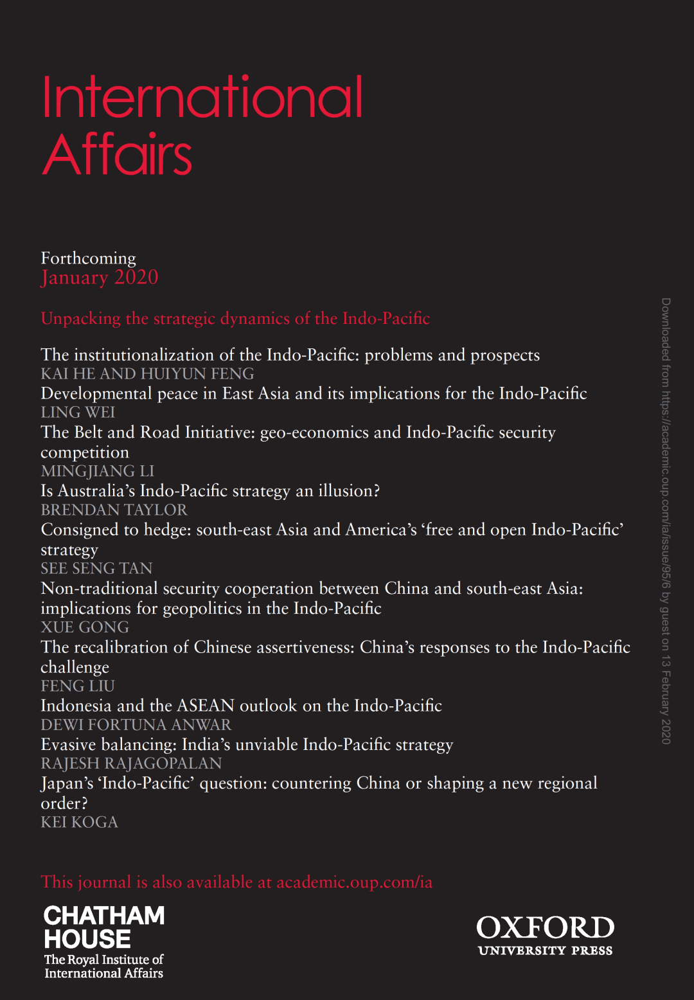
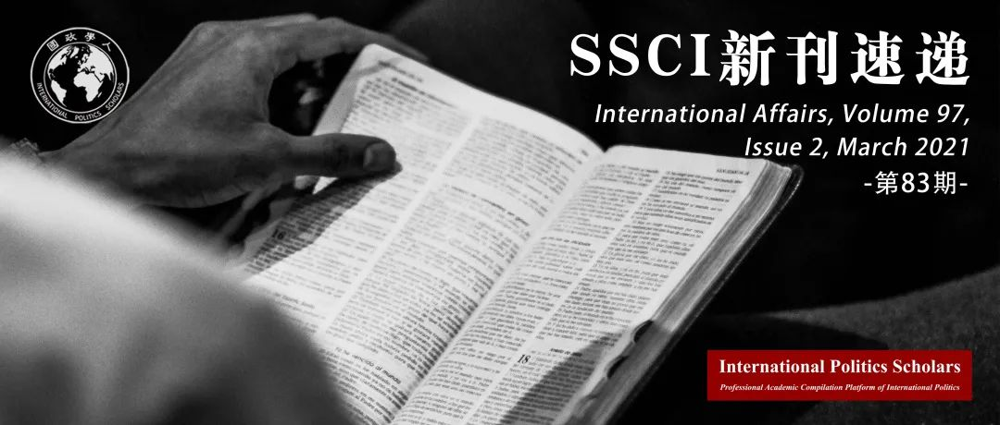

收录于合集 #新刊速递 123个


期刊简介

《国际事务》是国际关系领域的一流学术期刊，也是多学科综合性学术期刊。本刊于1992年由伦敦皇家国际事务研究所查塔姆学院(Chatham House)创立，内容来源广泛，力图囊括业内专家、学术新秀对重点、热点问题的最新思考。2019年期刊影响因子为3.705，在95个国际关系类刊物中位列第4名。
本期编委
【编译】 钱靓 吕紫烟 戎秦婴 李月云 王芷汀 程朵依
【审校】 李博轩 戴赟 邵良 阮辰阳 杨沛鑫 黄慧彬
【排版】 秦子宁
【美编】 游钜家

本期目录
1. 英国军队去殖民化的初步效果
Decolonizing the British Army: a preliminary response
2. 隐蔽平衡：大国、次要国家和美国对华平衡战略
Covert balancing: Great Powers, secondary states and US balancing strategies against China
3. 民粹主义时代谁有资格去表达情绪？英国女性对移民拘留政策的反对
Who is entitled to feel in the age of populism? Women’s resistance to migrant detention in Britain
4. 重申霸权的男性气质：女性在极右派中的领导
Reasserting hegemonic masculinity: women’s leadership within the far right
5. 新型冠状病毒大流行期间的知识产权和基本药物
Intellectual property and essential medicines in the COVID-19 pandemic
6. 缺失的和平感：新冠疫情封锁期间的外交接触与虚拟化
The missing sense of peace: diplomatic approachment and virtualization during the COVID-19 lockdown
01
英国军队去殖民化的初步效果
【题目】 Decolonizing the British Army: a preliminary response
【作者】 Anthony King，华威大学战争研究系主任
【摘要】 在2020年5月25日非裔美国人乔治·弗洛伊德死后，反种族主义的抗议运动席卷了美国和欧洲。这使得英国的公共机构开始重新审视他们的理念与实践，以确保他们不仅仅做到了不歧视，而且还积极地反对种族主义。军队也不例外。事实上，包括英国国防参谋长在内的高级指挥官已经推进了“去殖民化”的项目。自2000年起，英国军队已经开始接受黑人、亚裔及其他少数族裔（Black, Asian and Minority ethnic，BAME）的军人，如今这些军人的占比已经超过10%。本文通过调查少数族裔军人在英国军队中的融合情况，来评估军队“去殖民化”的程度。尽管军队的融合政策取得了显著成效，但本文也指出了目前阻碍少数族裔融合和去殖民化的三个困难。第一，大部分的BAME军人并非英国公民，而是外国公民或英联邦公民。其次，占大多数的英国士兵中的年轻者在军营和训练中往往能更好地互动，他们在这个过程中意外地将其他国籍的士兵排除在外。最后，英军的军事理念依然保留着一定程度上的盎格鲁- 撒克逊色彩。本文探究了多元化英军中的紧张关系，并就此提出解决这些紧张关系、进一步实现去殖民化的建议。
Following the death of George Floyd in Minneapolis on 25 May 2020, anti-racist protests occurred across America and Europe. As a result, public institutions in the UK have begun to re-examine their cultures and practices to ensure not only that they are non-discriminatory, but also that they are actively anti- racist. The Army will not be immune to this process. Indeed, senior commanders including the Chief of the Defence Staff have already embraced the ‘decolonizing’ programme. Since 2000, the Army has incorporated significant numbers of Black, Asian and minority ethnic (BAME) soldiers; just over 10 per cent of the Army is now BAME. This article examines the integration of minority soldiers over the last two decades in order to assess the prospects of ‘de-colonization’ in the Army today. Despite the apparent success of the Army’s integration policy, this article identifies three obstacles which still obstruct minority integration and are likely to impede de-colonization. Firstly, the majority of the Army’s BAME soldiers are not British citizens, but foreign and Commonwealth nationals. Secondly, the young age of the majority of British soldiers generates interactional dynamics in barracks and training which often accidentally excludes foreign minority soldiers. Thirdly, the military ideal of the British Army remains understandably Anglo-Saxon. This article considers the tensions inherent in the Army’s multicultural project and lays out suggestions about how they might be overcome to pursue a de-colonizing agenda.
【编译】 钱靓 ****
【审校】 黄慧彬 ****
02
隐蔽平衡：大国、次要国家和美国对华平衡战略
【题目】 Covert balancing: Great Powers, secondary states and US balancing strategies against China
【作者】 Hugo Meijer, 巴黎政治学院国际研究中心研究员；Luis Simón，欧洲研究所研究教授、埃尔卡诺皇家研究所布鲁塞尔办事处主任。
【摘要】 纵观历史，大国们制定了旨在遏制竞争对手野心的平衡战略。为此，大国们寻求与次要国家建立并动员联盟和安全伙伴关系。然而，在国际关系文献中，次要国家对大国平衡战略所产生的影响被大大低估了。与传统观点相反，本文认为次要国家的偏好在塑造大国的平衡选择方面发挥着关键的促成或制约作用。本文特别关注次要国家如何采用对冲策略（hedging strategies）来影响守成大国的平衡策略。本文认为，当次要国家采取对冲战略时，守成大国就会被激励采取“隐蔽平衡”（covert balancing）。隐蔽平衡是指，守成大国将自己与次要国家的安全合作隐藏在一个看似与平衡崛起国无关的幌子下，从而应对次要国家的对冲策略，并可以同时帮助产生一种潜在的平衡能力。本文通过研究美国在亚太地区对中国采取的平衡战略来论证观点。
Throughout history, Great Powers have devised balancing strategies aimed at checking the ambitions of rival Great Powers. To do that, they have sought to enter and mobilize alliances and security partnerships with secondary states. Yet, the influence of secondary states on the balancing strategies of Great Powers remains largely under-estimated in the International Relations literature. Contrary to conventional wisdom, we posit that secondary state preferences play a key enabling or constraining role in shaping the balancing choices of Great Powers. We focus specifically on how the adoption of hedging strategies on the part of secondary states affects the balancing strategies of established Great Powers. We argue that when secondary states adopt a hedging strategy established Great Powers are incentivized to engage in what we call ‘covert balancing’. Covert balancing occurs when an established Great Power conceals its security cooperation with a secondary state beneath a cover that is seemingly unrelated to balancing a rising Great Power, thus working around the secondary state’s hedging strategy while at the same time helping to generate a latent capacity to balance. We probe our argument by examining US balancing strategy against China in the Asia–Pacific.
【编译】 吕紫烟
【审校】 李博轩
03
民粹主义时代谁有资格去表达情绪？英国女性对移民拘留政策的反对
【题目】 Who is entitled to feel in the age of populism? Women’s resistance to migrant detention in Britain
【作者】 Ali Bilgic 英国拉夫堡大学 政治与国际关系讲师；Athina Gkouti获得阿伯里斯特威斯大学博士学位，AAWP网站（致力于研究当今国际政治）创始人，主要兴趣领域是低碳经济与气候变化，移民与人权，解决冲突。
【摘要】 在反移民民粹主义观念抬头的背景下，欧洲各国均采取了严格的移民政策，如在英国实行无限制拘留政策，以安抚日益高涨的反移民情绪。这些国家的做法优先考虑了国内公民对移民的不安全感，而移民的情绪和不安全感则未被纳入政治考量范围。从而引出，哪一方在政治层面中的情绪更为重要，这一探讨还伴随着安全问题。这篇文章将安全政治中的情感问题作为一种权利来阐述，随后探讨了谁更“值得”获得安全的问题。通过关注在反移民民粹主义背景下这项权利被剥夺的个人，调查女性移民如何“感受”被拘留和当她们“感受”到安全感时表达出的情绪。研究采用心理学中的“听导”方式，对在英国经历过拘留的女性进行深入访谈，分别描述其在拘留前、拘留期间和拘留后的情绪。本文将女性主义对情感的研究和国际关系安全研究相结合，揭示了她们在日常“感受”安全的实践中情绪动力的重要性，这为女性主义国关理论和安全研究提供一条研究路径，即优先考虑那些在民粹主义时代仍试图保持沉默的人。
European states have adopted strict migration policies, such as unlimited detention in Britain, to address increasing anti-immigrant emotions in the context of rising anti-immigrant populism. These state practices prioritize the feelings of insecurity of some population groups towards immigrants whose emotions and insecurities are politically marginalized. Consequently, whose emotions matter in politics intertwines with whose security matters. This article articulates emotions in politics of security as an entitlement, which feed into the question of who‘merits’security politically. By focusing on individuals to whom such entitlement is denied in the context of anti- immigrant populism, it investigates how immigrant women‘feel’detention and enact their emotions in their own everyday‘felt’security. The research is conducted through in-depth interviews with women who experienced detention in Britain. Through the method of‘listening guide’adapted from psychology, the research studies their narratives about their emotions before, during and after detention. By bringing together the feminist research on emotions and‘everyday security’approaches in International Relations, this analysis contributes to feminist IR and security studies on women’s agency in the politics of security, by revealing the importance of emotional dynamics in their everyday‘felt’security practices. Therefore, it offers a path for feminist IR and security studies to prioritize those whom anti-immigrant populism aims to silence in the age of populism.
【编译】 戎秦婴
【审校】 戴赟
04
重申霸权的男性气质：女性在极右派中的领导
【题目】 Reasserting hegemonic masculinity: women’s leadership within the far right
【作者】 Owen Worth（欧文·沃斯），利默里克大学政治和公共管理学院教授，主要研究权力的本质，阶级，特别是霸权在全球政治经济和全球政治社会中的作用。
【摘要】 全球极右派的涌现被看作是近年来一个重大的发展，同时也被认为是对新自由主义的全球化更为广阔形式的一个挑战。尽管大量文章就极右派的重要性和代表性进行了探讨，但少有就其蕴含的性别特质和女性作为其中的行为体所扮演的角色进行分析。尽管在极右派的支持和参与上仍存在性别差距，但领导人的数量，无论是实际上的还是名义上的，均在各自的运动中有所增加。本文认为，尽管出现了这些女性，极右派仍然试图构建一种极端的男性气质形式，其中反女权主义作为其整体战略的重要组成部分出现。通过探讨葛兰西学派对霸权建构的理解和随后的男权霸权的概念，作者认为，女性作为领导者和“有组织观念的知识分子”在各自国家运动中的出现，使她们获得了更大的合法性。女性并没有“女性化”或缓和极右叙事的形式，而是希望通过增加对现有的反移民、民族主义，特别是“反女权主义”含义的理解来加强这种极端的男性气质。因此，最近极右派政党的领导人伴随媒体专栏作家和“名人”一起出现，共同促成了极右派极端男性气质的构建。
The emergence of a global far right has been seen as a significant development in recent years and as a challenge to wider forms of neo-liberal globalization. While much has been written about its significance and representation, little has been written on either the gendered nature of the far right and the role that women have played as actors within it. Though there still remains a gender gap in terms of the support and participation of the far right, there has been an increasing rise of leaders and figureheads within the respective movements themselves. This article argues that despite the emergence of these women, the far right looks to construct an extreme form of masculinity in which anti-feminism appears as a significant part of its overall strategy. By engaging with both the Gramscian understandings of hegemonic construction and subsequent notions of masculinist hegemony, it argues that the appearance of women both as leaders and ‘organic intellectuals’ within respective national movements allows them to gain greater legitimacy. Rather than ‘feminizing’ or indeed moderating the form of far-right narratives, women had looked to re-inforce such extreme masculinity by adding to existing understandings of anti-immigration, nationalism and in particular of the meaning of ‘anti-feminism’. Thus, recent leaders of far- right political parties appear alongside media columnists and ‘celebrities’ in contributing to the construction of extreme masculinity with the far right.
【编译】 李月云
【审校】 阮辰阳
05
新型冠状病毒大流行期间的知识产权和基本药物
【题目】 Intellectual property and essential medicines in the COVID-19 pandemic
【作者】 Thana C De Campos-Rudinsky于2014年加入休格尔研究所（Von Hügel Institute）担任助理研究员。她在智利天主教大学任职助理教授，并在休假期间担任普林斯顿大学国际和区域研究院（Institute for International and Regional Studies）的研究员（2020-2021）。她还是联合国教科文组织生物伦理与人权教研室的研究员。
【摘要】 全球正义理论家广泛讨论了在实现重要而且通用（更负担得起）的新冠肺炎治疗（包括接种潜在的新冠肺炎疫苗）的目标过程中，国际知识产权制度（即世界贸易组织的《与贸易有关的知识产权协定》）如何使这一过程更加困难。本文认为，尽管专利可以为新冠肺炎通用治疗的普及设置某些障碍，但TRIPs协议本身是面对新型冠状病毒大流行，全球公平解决方案不可或缺的一部分。更具体地说，本文认为TRIPs协议第31条之二，即允许重要的新冠肺炎通用治疗药物互补进出口，制定以此为基础的合作战略，是成功遏制病毒大流行的关键。根据全球正义道德要求对第31条之二进行规范性解释分析，并回应对其核心论点可能提出的反对意见，本文证实了国家间多边团结的理想。在危机期间——不仅有全球公共卫生危机，而且有多边主义危机——第31条之二所允许的这种互补性合作战略显示了国际法律秩序力求维护的全球共同利益的前进方向。
Global justice theorists have widely discussed how the international intellectual property rights regime (i.e., the TRIPs regime of the World Trade Organization) makes it more difficult to achieve the goal of universal access to generic (and more affordable) vital COVID-19 treatments (including potential COVID-19 vaccines). This article argues that while patents can impose certain barriers to universal access to generic COVID-19 treatments, the TRIPs regime itself is an integral part of an equitable global solution to the pandemic. More specifically, it argues that article 31bis of the TRIPs, in allowing for a cooperation strategy predicated on complementary importing and exporting of vital COVID-19 generic treatments, is key for successful pandemic suppression. By providing a normative interpretative analysis of article 31bis in light of the ethical requirements of global justice, and by responding to possible objections to its core argument, this article substantiates the ideal of multilateral solidarity among nations. In times of crisis—not only a crisis of global public health, but also a crisis of multilateralism—this complementary cooperation strategy that article 31bis allows for shows a way forward in upholding the global common good that the international legal order seeks to safeguard.
【编译】 王芷汀
【审校】 杨沛鑫
06
缺失的和平感：新冠疫情封锁期间的外交接触与虚拟化
【题目】 The missing sense of peace: diplomatic approachment and virtualization during the COVID-19 lockdown
【作者】 Isabel Bramsen, 隆德大学讲师；Anine Hagemann，哥本哈根大学政治系博士。
【摘要】 2020年,随着史无前例的新冠疫情带来的边境封锁，许多和平外交活动转战线上。这种情况意味着很多常见的和平外交活动暂时无法实现，同时也为研究虚拟外交和面对面会谈微观动态的提供了机遇。本文基于对叙利亚- 也门和平进程中的各方当事人和调解人的访谈，分别分析了虚拟会议和实体会议的可供性。我们发现，虚拟会议通过以下方式制约着和平外交：扩大访问渠道，增加泄密风险，允许更高的会议频率，常常中断互动（尽管有时也有反例）等。向虚拟会议的过渡意味着与会者无法身临现场，难以花更长时间在一起，也失去了协调互动和分享非正式空间的可能性。这些东西的缺失，阻碍了我们所谓的和平感的产生，也就是线下会议的内在潜力，我们将其概念化为理解感、团结感和信任感。接下来我们建议将这一概念拓展到和平外交范畴之外，涵盖所有外交接触的形式。最后，本文提出了虚拟外交的策略，并探讨了虚拟外交与实体外交应如何互补。
With the unprecedented COVID-lockdown in 2020, many peace diplomatic efforts turned virtual. This represented a temporary loss of many of the usual practices of peace diplomacy and provided an opportunity to examine micro- dynamics of both virtual diplomacy and face-to-face meetings. Based on interviews with parties and mediators involved in the Syrian and Yemeni peace processes we analyze the affordances of virtual and physical meetings respectively. We find that virtual meetings condition peace diplomacy by broadening accessibility, putting confidentiality at risk, allowing for higher frequency of meetings, often disrupting interaction, but also in some instances equalizing it. The transition to virtual also meetings demonstrated what is lost in the absence of physicality: bodily presence, spending longer periods of time together, the possibility of reconciliatory interaction and sharing informal space. When this is missing, it hampers conditions for what we call the sense of peace, that is, the visceral potential of meeting physically, which we conceptualize to include a sense of understanding, togetherness and trust. We further propose a wider application of this conception beyond peace diplomacy, in the form of diplomatic approachment. Finally, we suggest strategies in virtual diplomacy and discuss how virtual and physical diplomacy may supplement each other.
【编译】 程朵依
【审校】 邵良
好好学习，天天“在看”

国政学人
支持学术公益与知识传播
微信扫一扫赞赏作者 __赞赏
已喜欢，对作者说句悄悄话
取消 __
发送给作者
发送
最多40字，当前共字
上一页 1/3 下一页
长按二维码向我转账
支持学术公益与知识传播
受苹果公司新规定影响，微信 iOS 版的赞赏功能被关闭，可通过二维码转账支持公众号。